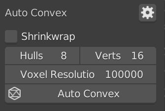
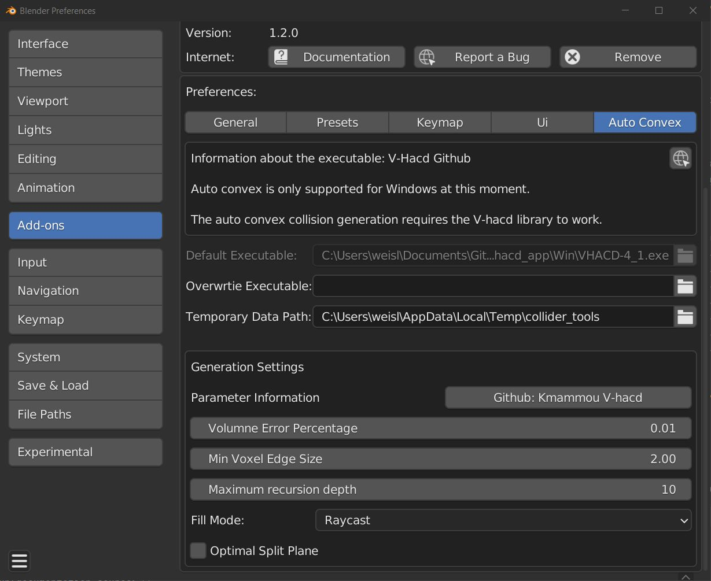

Auto Convex Shape
Warning
Auto Convex is currently only supported for Windows. It uses the external V-HACD .exe to work. It should work out of the box starting from version 1.1. Follow the instructions at the end of this page for earlier versions.
Auto Convex is a helpful tool for generating convex colliders of a complex mesh. It works well for complex, organic shapes, like rocks, statues, rubble and debris. It is not the magic one click solution for each asset but a helpful tool especially for organic assets!

Basic Parameters
The amount convex hulls and their complexity can mostly be controlled by following values. The parameters are exposed to the Collider Tools panel:
| Parameter name | Description | Default value | Range |
|---|---|---|---|
| Shrinkwrap | Whether or not to shrinkwrap output to source mesh | False | False/True |
| Hulls | Maximum number of output convex hulls | 8 | 1-4096 |
| Verts per Piece | Maximum number of vertices in the output convex hull | 16 | 8-1024 |
| Voxel Resolution | Total number of voxels to use. | 100000 | 100000-10000000 |

The parameter description is coming from the original library used: Github: V-hacd

Advanced Parameters
The advanced parameters can be found in the addon preferences in Auto Convex. You can directly access the preferences by pressing the gear button next to "Auto Convex".

- Overwrite Executable: Specify a path to another V-hacd executable if you want to use a custom build.
- Temporary Data Path Data path to store temporary files like meshes and log files sused by V-HACD to generate Auto Convex colliders.
Following table contains more information on the individual parameters:
| Parameter name | Description | Default value | Range |
|---|---|---|---|
| Volumne Error Percentage | Volume error allowed as a percentage. Default is 1%. | 0.01 | 0.001-10 |
| Min Voxel Edge Size | Minimum size of a voxel edge. Default value is 2 voxels | 2.0 | 1.0-32.0 |
| Maximum recursion depth | The recursion depth has reached a maximum limit specified by the user. A value of 12 results in a maximum of 4,096 convex hulls | 4 | 2-64 |
| Fill Mode | Fill Mode defines the method used for finding the interior voxels used for the auto convex collider creation | Raycast | Raycast/Flood/Surface |
| Optimal Split Plane | If false, splits hulls in the middle. If true, tries to find optimal split plane location. | False | True/False |
The parameter description is coming from the original library used: Github: V-hacd
Click this link to find detailed documentation for how to use the library: Voxelized Hierarchical Convex Decomposition - V-HACD version 4
Installation (pre 1.1)

- Download the V-hacd executable from the link below (Download V-hacd). (optional) Copy the downloaded executable to another directory on your hard drive.
- Press the small folder icon of the 'V-hacd exe' input to open a file browser. Select the V-hacd.exe you have just downloaded before and confirm with 'Accept'.
- (optional) The auto convex collider requires temporary files to be stored on your pc to allow for the communication of Blender and the V-hacd executable. You can change the directory for storing the temporary data from here.
- (optional) See the Github page of the V-HACD for more information on the executable.